12306 提前 15 天放票。到达站重庆北和重庆西都行，重庆北到解放碑更顺。
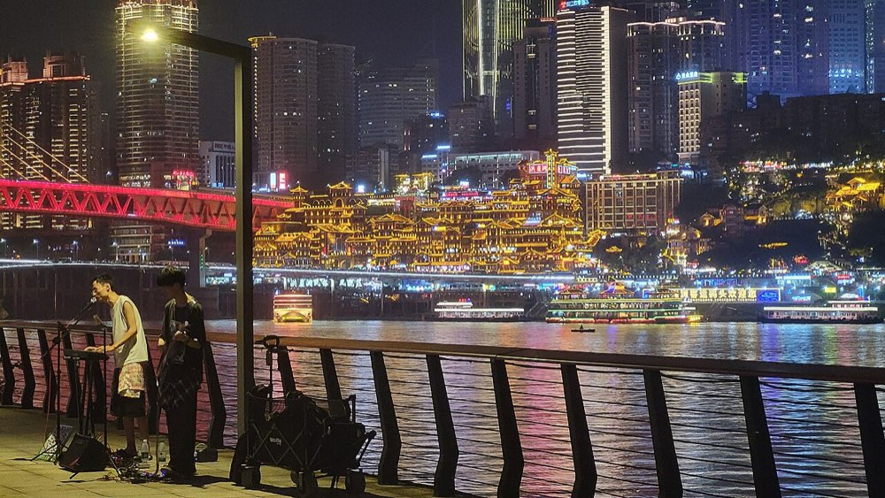
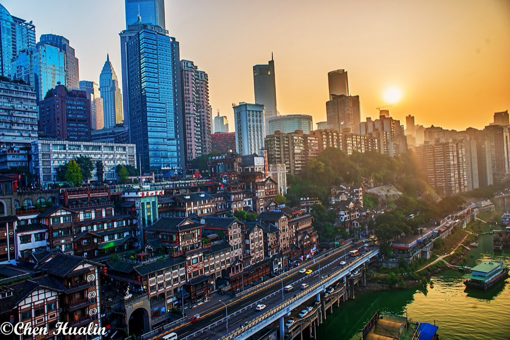
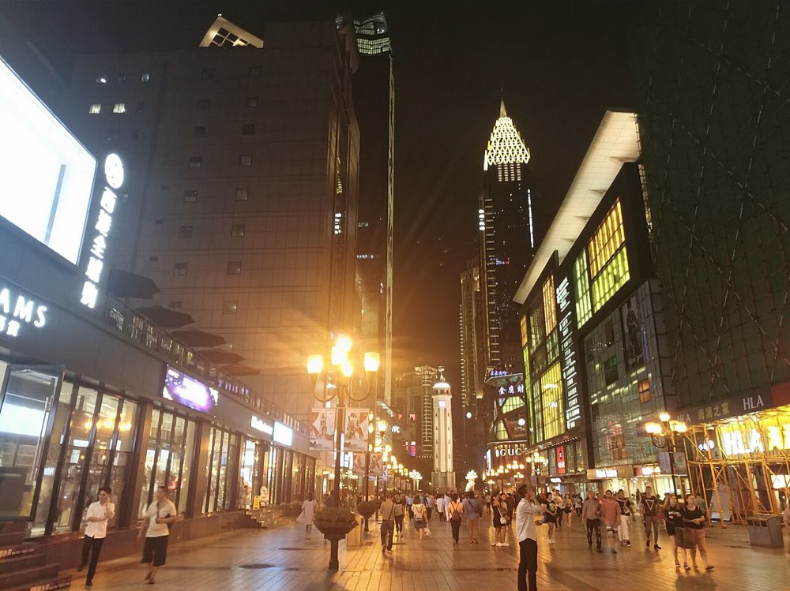
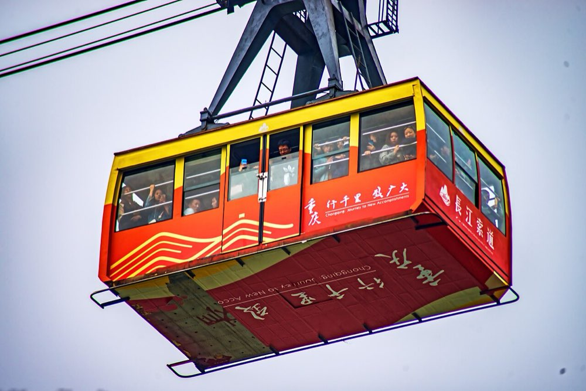
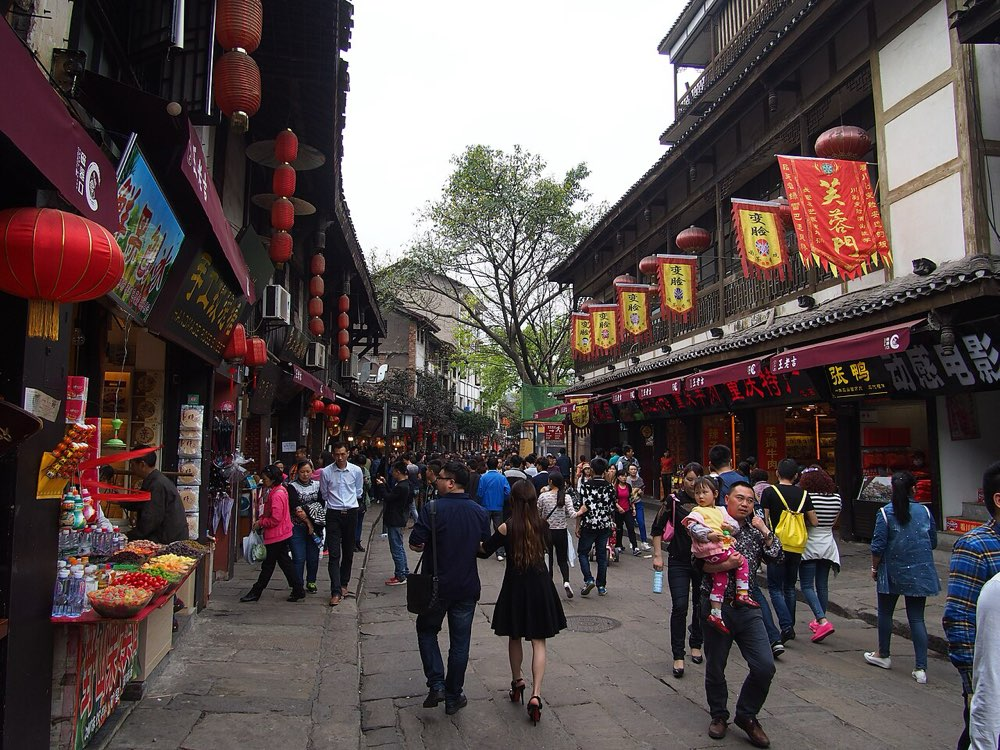
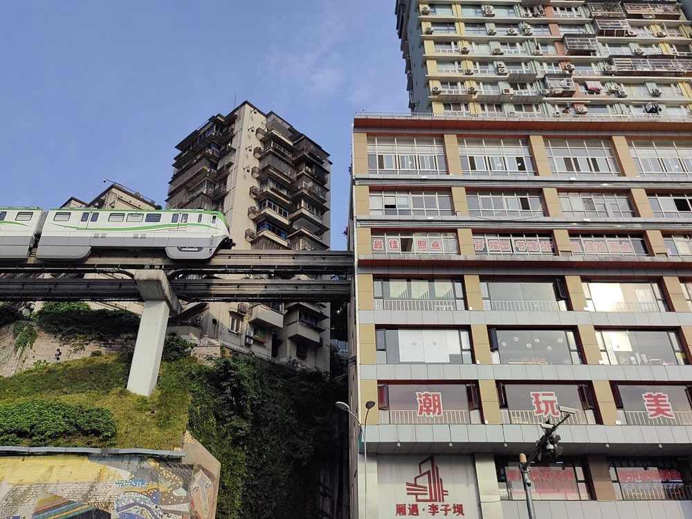
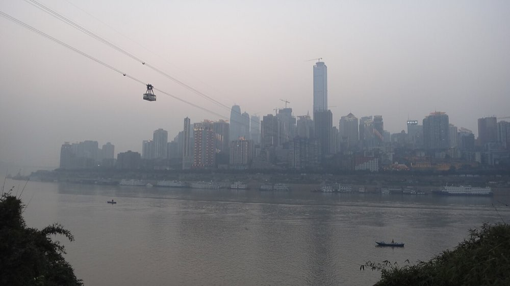
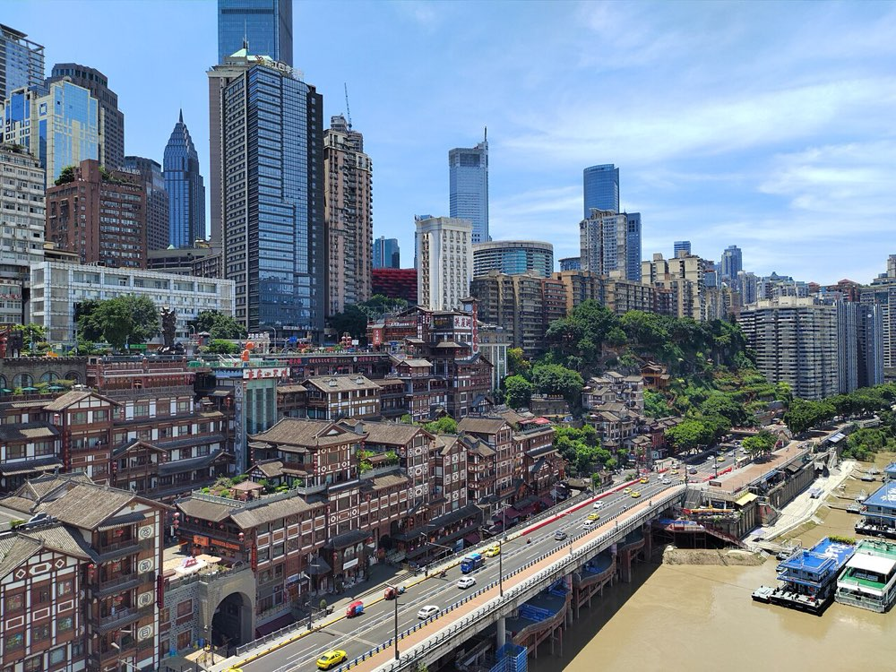
只有 2 天？把 Day 2 砍成「磁器口 → 李子坝 → 南山」，鹅岭二厂和山城巷跳过，Day 2 晚上直接从南山去重庆北赶 20 点前后的车，或者住一晚第二天早上走。有 4 天？把「加一天 · 武隆」插在 Day 2 和 Day 3 之间。
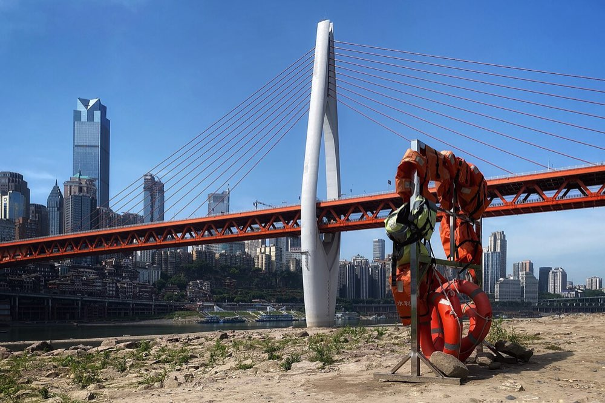
值不值得：值得，但要早起、要前一天订好票。当天往返能玩完天生三桥 + 地缝，回到解放碑在晚上 8 点前后。只有 3 天的话，去武隆就意味着放弃南山和山城巷，二选一。备选：不想赶的话换大足石刻（宝顶山 115 元，公众号「大足石刻」预约），重庆北到大足南约 40 分钟，景区集中，下午 3 点就能往回走。
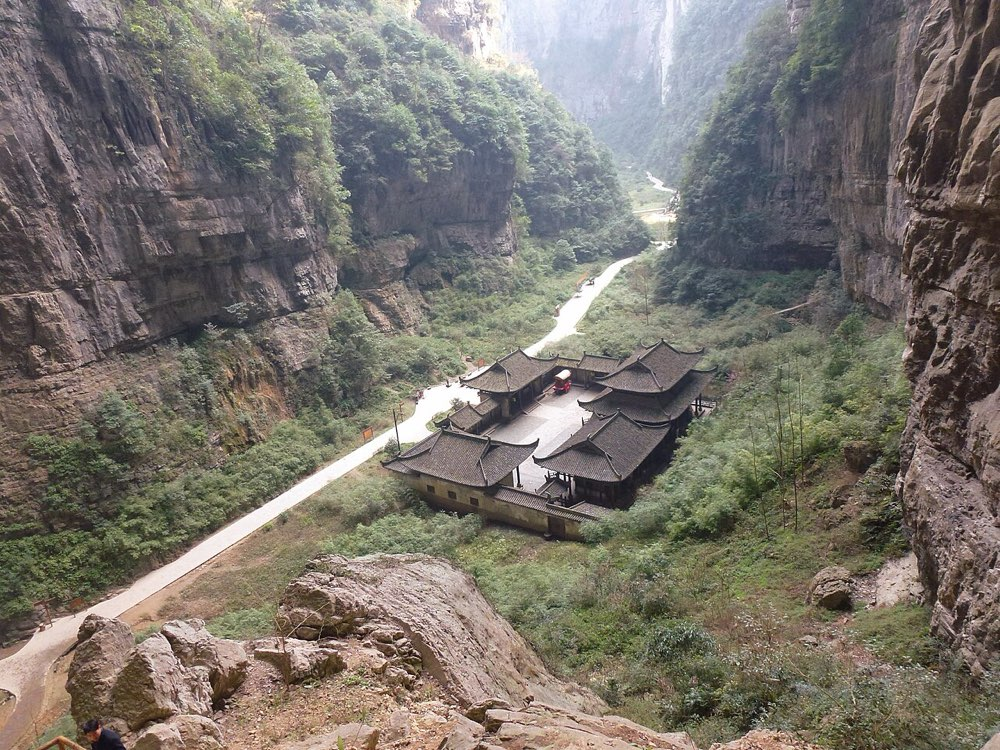
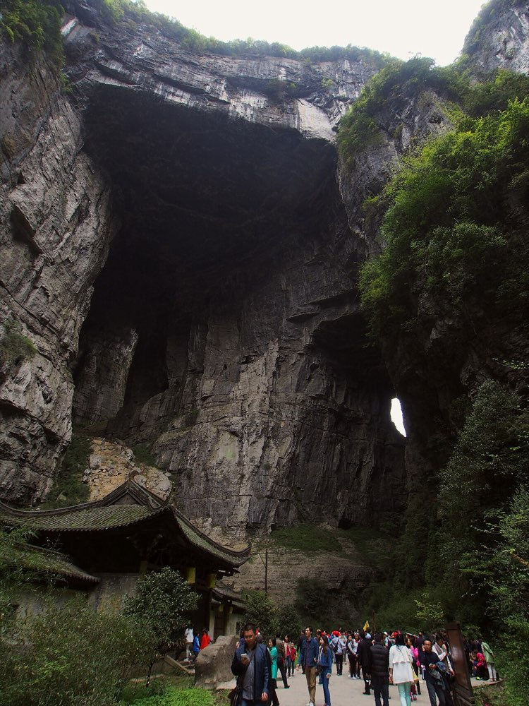
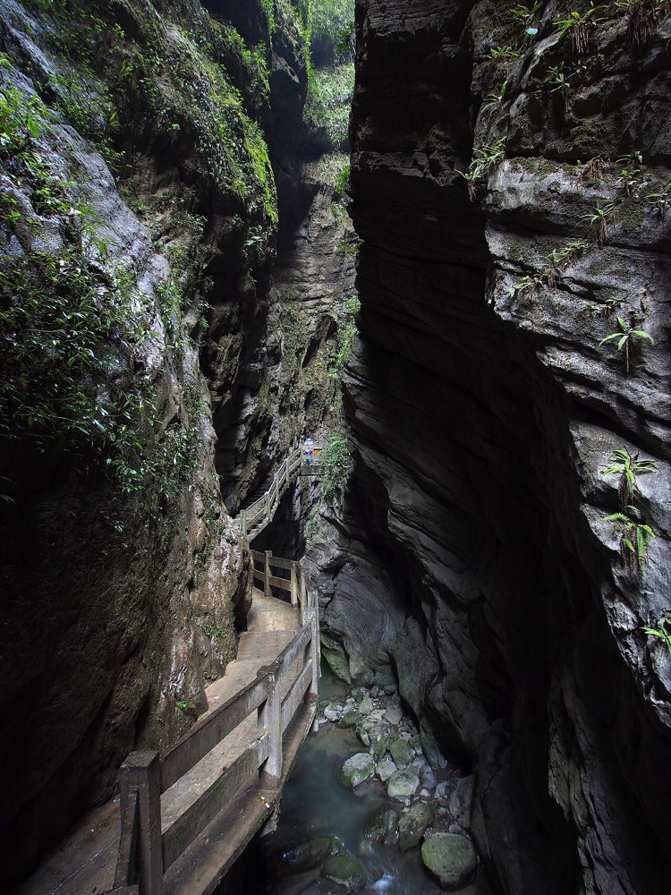
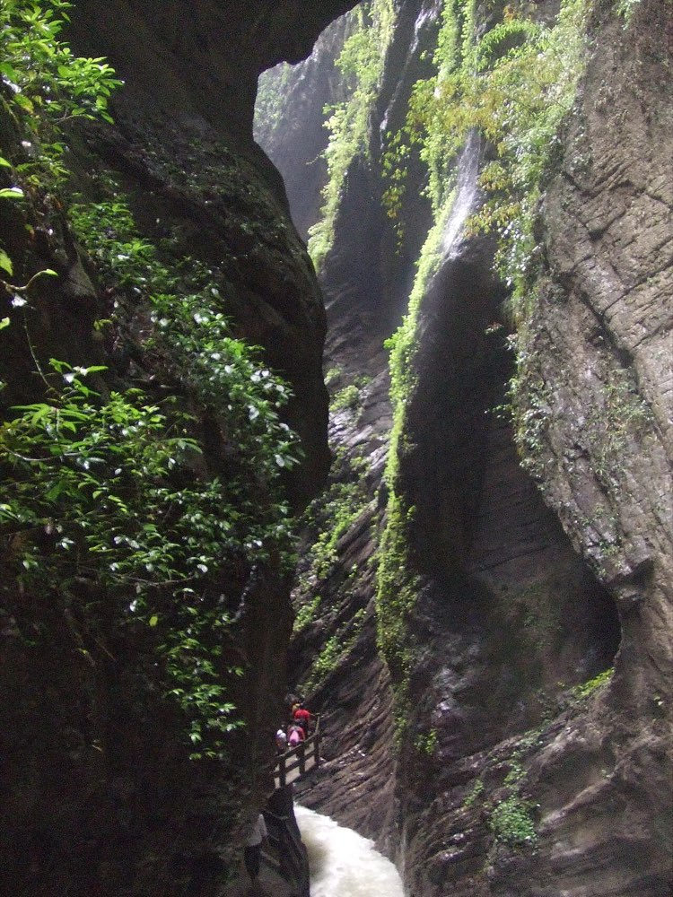
渝中是夹在嘉陵江和长江中间的一个半岛，解放碑在正中间，想去的地方基本都在步行 20 分钟内，只是上下落差能有十几层楼。2 号线沿嘉陵江走，去李子坝就靠它。
嘉陵江边 · 免费 · 亮灯 18:30–22:00
11 层吊脚楼堆在崖壁上，1 楼和 11 楼都通马路，是重庆「8D」的教科书。里面是商铺，真正好看的是从外面看它亮灯。
贴士：全景在千厮门大桥桥面和江北嘴江边；灯 22:00 前后关，别拖到太晚。
区域怎么选：第一次来、以夜景打卡为主，住解放碑 / 较场口 / 洪崖洞一带，走到洪崖洞 8 分钟、八一路 5 分钟、索道 10 分钟。南滨路江景好但过江要时间；观音桥适合购物；沙坪坝便宜但离景点远。价格是非节假日大致区间，以订房平台为准。
全勾完了，出发吧 🌶️
| 项目 | 每人 | 合计 |
|---|---|---|
| 高铁往返 西安 ↔ 重庆按二等座 ≈380 元估 | 760 | 1,520 |
| 住宿 2 晚1 间 × 2 晚 × 450 元 | 450 | 900 |
| 吃饭 3 天每人每天 150 元，含一顿火锅 | 450 | 900 |
| 门票长江索道往返 50 + 南山一棵树 30 | 80 | 160 |
| 市内交通轨道 + 两次打车 | 90 | 180 |
| 合计（2 人） | ≈1,830 | ≈3,660 |
门票按 2026 年官方价；车票按常见价；住宿按两人一间。武隆那天另算：动车往返 ≈130 + 门票 260 + 景区交通 40。实际上下浮动两三成。
秋天的重庆阴天和雾是常态，蓝天是运气。雾天夜景反而有味道，别因为阴天取消南山。长袖加薄外套，带伞。
🚄 高铁：12306，提前 15 天放票。西安北 ↔ 重庆北，到达站重庆西也行。
🚡 长江索道：公众号搜「长江索道」买票，提前 2 天早上 7:45 放票（节假日 7:15），单程 30、往返 50。买完必须在公众号里取号，不然到入口刷不出来要重排。08:00–22:00。
🚇 地铁：支付宝 / 微信乘车码直接刷，2–10 元按里程。末班约 23:00。
🌃 南山一棵树：现场买，30 元，09:00–22:30。两江夜游：各平台 98–198 元，朝天门上船，提前一天。来福士探索舱：120 元，10:00–22:00。
🏞 武隆：小程序「武隆景区官方平台」或各平台，天生三桥 155、龙水峡地缝 105（都含换乘车和电梯），08:30–16:30。大足石刻：公众号「大足石刻」预约，宝顶山 115、联票 140。
交通：西渝高铁西安—安康段开通（光明网，2026-09）、携程车次页（2026-08 快照）。景点与票价：长江索道购票指南（重庆本地宝，2026-04）、携程南山一棵树 / 来福士页面、两江游船（北京商报，2026-09）。武隆：武隆交通与票价（重庆本地宝，2026-07）。吃住、避坑综合自小红书、知乎、携程、大众点评 2025–2026 年的帖子。乘车码：光明网 2025-03。价格会变，以官方渠道为准。
实景照片来自 Wikimedia Commons：Jay Huang（千厮门大桥与洪崖洞夜景，CC BY 2.0）、Renek78（洪崖洞夜景、渝中天际线，CC0）、HoweyYuan（洪崖洞、解放碑，CC BY-SA 4.0）、Harveychl / Chen Hualin（洪崖洞日落、长江索道、李子坝，CC BY-SA 4.0）、ForwardXu（解放碑夜景，CC BY-SA 4.0）、Yumeto（李子坝，CC BY-SA 4.0）、王桁霽（千厮门大桥，CC BY-SA 4.0）、Limingqimonkey（南岸看渝中，CC BY-SA 3.0）、rheins（磁器口、天龙桥、龙水峡地缝，CC BY 3.0）、RoyalCathayan（天生三桥，CC BY-SA 4.0）、Nyx Ning（地缝栈道，CC BY-SA 3.0）、Jpbowen（磁器口牌坊，CC BY-SA 4.0）。小人和地图是手绘风格示意，不按比例。